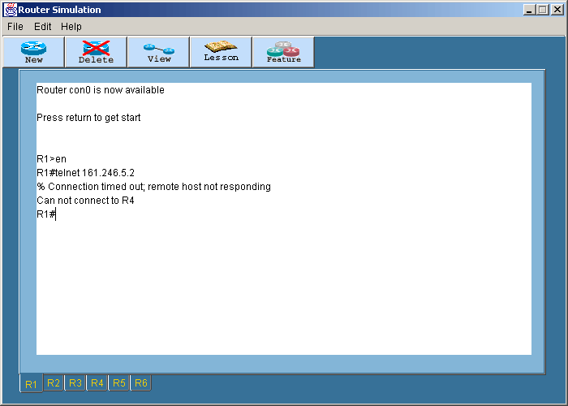
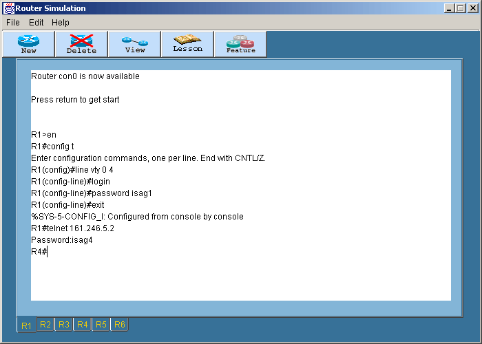

Telnet
หลังจากที่ได้กำหนดค่าต่างๆ
ให้กับเราเตอร์แล้ว ยังมีคำสั่ง Telnet ที่ใช้สำหรับกำหนดค่าให้กับเราเตอร์โดยไม่ต้องกำหนดจากหน้า
console คำสั่ง Telnet นี้จะเรียกใช้จาก prompt โดยสามารถกำหนดพาสเวิร์ดในส่วนนี้ที่
VTY Password
- ล็อกอินเข้าเราเตอร์ที่ต้องการ หลังจากนั้นเข้าสู่ Privilege โหมดโดยพิมพ์คำสั่ง
En หรือ Enable
แล้วกด Enter
- ที่ R1# พิมพ์คำสั่ง Telnet 161.246.5.2 เพื่อเข้าไป config R4 แต่จะไม่สามารถเข้าไป
config ได้เนื่องจากพาสเวิร์ดยังไม่ได้กำหนด

- การกำหนด VTY Password โดยกำหนดที่ R1 และ R4 ดังนี้
R1(config)#line vty 0 4
R1(config-line)#login
R1(config-line)#password isag1
R4(config)#line vty 0 4
R1(config-line)#login
R1(config-line)#password isag4
- กำหนดให้ที่ R2 ไม่มี VTY Password ดังนี้
R2(config)#line vty 0 4
R2(config-line)#no login
คำสั่งนี้จะทำให้เวลา Telnet เข้าไปสามารถเข้าไปสู่ prompt ได้โดยไม่ต้องใส่พาสเวิร์ดก่อน
- หลังจากกำหนดพาสเวิร์ดแล้วให้ลอง Telnet ไปที่ 161.246.5.2 อีกครั้ง
เมื่อเข้าไปแล้วให้พิมพ์คำสั่ง Exit เพื่อกลับมาที่ R1 แต่ถ้าต้องการกลับมาที่
R1 โดยที่ไม่ต้องล็อกเอาท์ออกจาก R4 ก่อน สามารถทำได้โดยพิมพ์ Ctrl + Shift
+ 6 + X

- ที่ R1 พิมพ์คำสั่ง Show Session เพื่อแสดงว่า....
- กลับไปที่ Session ของ R2 แล้วพิมพ์คำสั่ง Exit
- กลับไปที่ Session ของ R4 แล้วพิมพ์คำสั่ง Exit
สำหรับโหมดการทำงานทั้งหมดของเราเตอร์สามารถดูได้ในสรุปคำสั่งทั้งหมด
|
 Lesson 9
Lesson 9